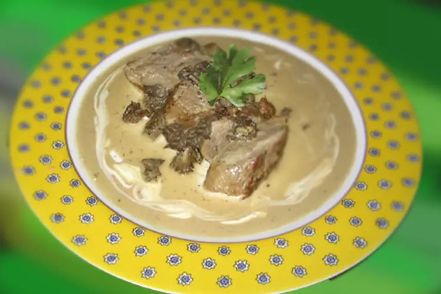

Filet mignon sauce aux morilles
Ingredients
6×
- 100 g de morilles surgelées
- 2 filets mignons
- sel
- poivre
- beurre
- 5 cl de porto
- 20 cl de fond de veau
- 15 cl de crème fraîche

Préparation
Étape 1
Décongeler 100 g de morilles surgelées en récupérant l’eau de végétation. Assaisonner 2 filets mignons de sel et de poivre.
Étape 2
Saisir les filets sur les 4 faces dans du beurre, puis verser l’eau de végétation. Couvrir et cuire doucement 20min.
Étape 3
Déglacer les sucs avec 5 cl de porto et réduire de moitié. Ajouter 20 cl de fond de veau et les morilles coupées en rondelles, puis réduire de moitié.
Étape 4
Ajouter 15 cl de crème fraîche et réduire encore de moitié.